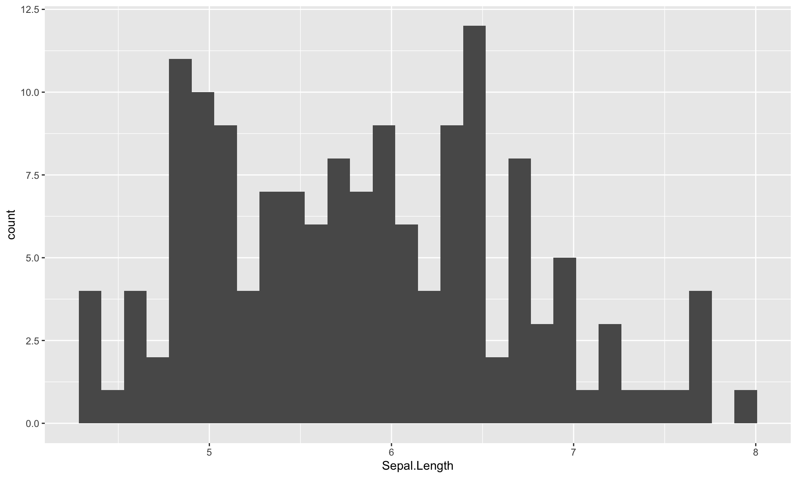
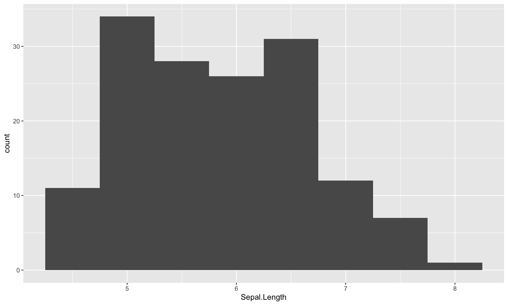
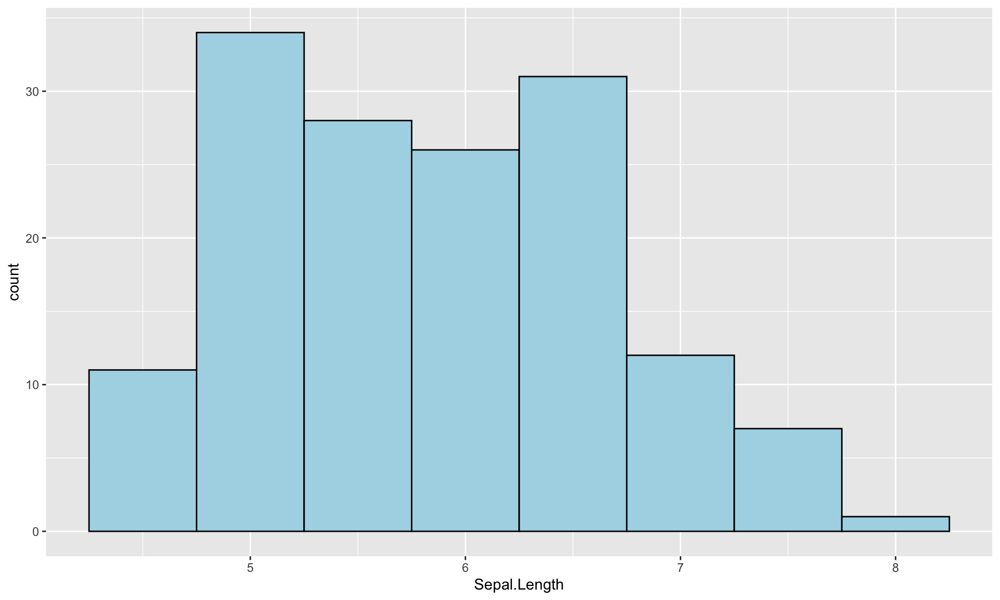
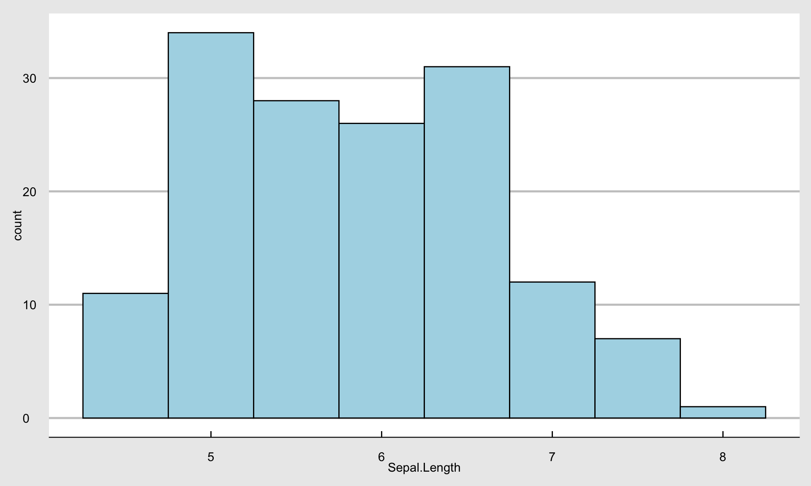
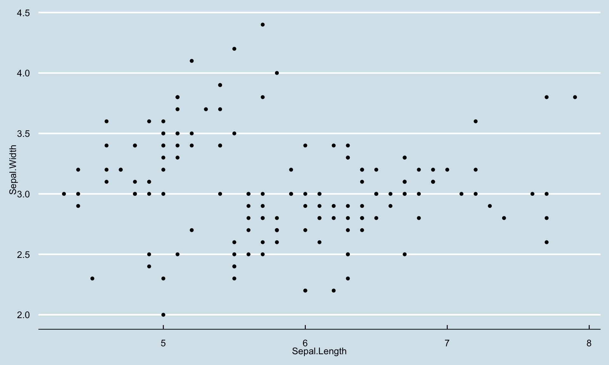

1. 楽にデータ操作ができる
- Rはデータ分析のためのプログラミング言語で、データを扱うためのパッケージが豊富に揃っています。
- Excelでは扱えないかなり大きなデータでも簡単にデータ操作ができます。
- 分析のプロセスをソースコードに残すことができるので、再現可能性が高いです。
練習用データiris
データ分析の練習用データとして有名なirisデータをいろいろ操作してみましょう。 irisは「あやめ」という花の花びらとがく片の長さと幅、あやめの分類名の合計5項目が150件収録されているデータベースです。head()関数を使ってirisの先頭の6行を読み込んでみます。
Sepal.Length Sepal.Width Petal.Length Petal.Width Species
1 5.1 3.5 1.4 0.2 setosa
2 4.9 3.0 1.4 0.2 setosa
3 4.7 3.2 1.3 0.2 setosa
4 4.6 3.1 1.5 0.2 setosa
5 5.0 3.6 1.4 0.2 setosa
6 5.4 3.9 1.7 0.4 setosa
平均を計算する。
Sepal.Length、Sepal.Width、Petal.Length、Petal.Width、Speciesという5つの項目が入っていることが分かります。Sepalは花びらで、Petalはがく片です。まず花びらの長さSepal.Lengthの平均を求めてみましょう。平均を返す関数はmean()です。
あやめの花びらの長さの平均は、5.8433333であることが分かりました。簡単ですね。
次に，あやめの花びらの長さの標準偏差を求めてみましょう。 標準偏差を返す関数はsd()です。 下のボックスの緑の三角ボタンを押すと，Rコードが実行され，下に結果が表示されます。 sd()で標準偏差，max()で最大値，min()で最小値，median()で中央値を求めることができるので，sdのところを書き換えて実行し，結果を確認してみてください。
次に、あやめの種類を表すSpeciesにはどんな種類があるのか見てみましょう。 Speciesに入っている種類を確認するには、table()関数を使ってみます。
あやめの種類には、setosa、versicolor, virginicaがあり、それぞれ50個のデータがあることが分かります。
次に、このirisを使って、グラフを作ってみます。
2. キレイなグラフが書ける。
次にRが得意とするグラフ作成を行います。 最初に、花びらの長さのヒストグラムを書いてみます。 さくっとヒストグラムを作るには，基本関数のhist()を使います。 irisデータのSepal.Lengthを使ってヒストグラムを作成してみましょう。
もっとキレイなグラフを書く。
非常に簡単かつ分かりやすく美しいグラフを作成できるggplot2パッケージを使ってグラフを作成します。library(ggplot2)を実行して、ggplot2パッケージを読み込みます。
# install.packages("ggplot2") # 1回だけ実行
library(ggplot2)
次に、ggplot2を使って、花びらの長さのヒストグラムを書いてみます。
g <- ggplot(iris) + aes(Sepal.Length) #データと変数を指定
g <- g + geom_histogram() # ヒストグラム
print(g) # グラフを表示

グラフをカスタマイズする。
ヒストグラムの階級幅を変更したり、棒の数を変更するには、geom_histogram()の中で指定します。 例えば、階級幅を0.5でヒストグラムを作る場合は、binwidth = 0.5のように指定します。
g <- ggplot(iris) + aes(Sepal.Length) +
geom_histogram(binwidth = 0.5)
print(g)

グラフのデザインを変更する。
グラフが黒くて見づらいので、デザインをいじってみます。 geom_histogram()関数の中で、線を黒、中を薄青色に指定します。
g <- ggplot(iris) + aes(Sepal.Length) +
geom_histogram(color="black", fill="lightblue",binwidth = .5)
print(g)

グラフのテーマを変える。
背景が地味なので、グラフを雑誌Economist風にしてみます。
g + theme_economist_white() + scale_colour_economist()

2変数の散布図を書く。
次は花びらの長さと幅の散布図を書いてみます。 ggplot2で散布図を書くためには、aes()でx軸とy軸を指定し、geom_point()で散布図を指定する。
ggplot(iris) + aes(x = Sepal.Length, y = Sepal.Width) +
geom_point() + theme_economist()

色分けも簡単
カテゴリーを表す変数をgroupとcolourで指定すると、カテゴリーごとにグループ化して色分けもしてくれます。ここでは花の種類を表す変数であるSpeciesごとに色分けしてみます。
g <- ggplot(iris) + # データセットirisを指定
aes(x = Sepal.Length, # x軸 花びらの幅
y = Sepal.Width, # y軸 花びらの幅
color = Species # あやめの種類ごとに色分け
) +
geom_point() + # 散布図を指定
theme_economist() # テーマをEconomistに
print(g)
インタラクティブなグラフも簡単
操作できるグラフも作れます。 plotlyパッケージを使えば簡単です。
library(plotly)
ggplotly(g)
3. レポート・論文が作れる。
- データを分析した結果を表や図としてレポートや論文に載せる場合、MS Excelで作成した図や表を、MS Wordにコピペしてませんか？
- その場合、Wordで書いてたレポートの図表に少し修正を加えることになると、またExcelを開いて修正し、またコピペしたりしてませんか？
- レポートを2週間後に読んだとして、その図表を作成したExcelがどこにあるのか、またどうやって作ったのか思い出せますか？
RとQuartoなら心配いりません。
Quartoで資料作成
- QuartoやRmarkdownを使ってMarkdownでレポートを書けば、文章作成と図表を同じ場所で作成できます。
- このスライド資料もQuartoを使って作成し、GitHubで公開してます。